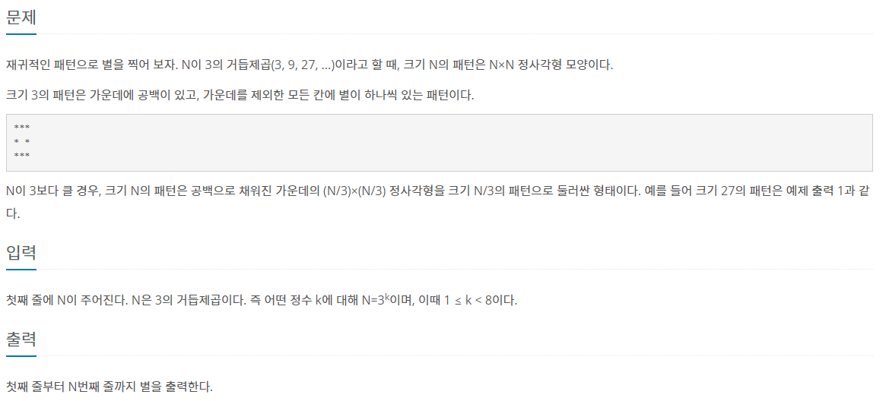
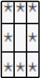
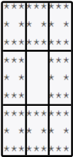

#INFO
난이도 : SILVER1
알고리즘 : 재귀/분할정복
문제 출처 : 2447번: 별 찍기 - 10 (acmicpc.net)
2447번: 별 찍기 - 10
재귀적인 패턴으로 별을 찍어 보자. N이 3의 거듭제곱(3, 9, 27, ...)이라고 할 때, 크기 N의 패턴은 N×N 정사각형 모양이다. 크기 3의 패턴은 가운데에 공백이 있고, 가운데를 제외한 모든 칸에 별이
www.acmicpc.net

#SOLVE
큰 문제를 작은 문제로 나누어 풀이하는 분할정복 문제이다. 우선 배열의 원소를 모두 빈 칸으로 채워준다.
int n;
cin >> n;
for (int i = 0; i < n; i++)
fill(board[i], board[i]+n, ' ');
다음으로 재귀 함수를 정의한다. solve 함수는 사각형의 크기 n 과 탐색을 시작할 위치 x y 좌표를 입력받아 배열에 올바른 값(*)을 채워주는 역할을 수행하는 함수이다.
void solve(int n, int x, int y) {
if (n == 1) {
board[x][y] = '*';
return;
}
for (int i = 0; i < 3; i++) {
for (int j = 0; j < 3; j++) {
if (i == 1 && j == 1)
continue;
solve(n / 3, x + n / 3 * i, y + n / 3 * j);
}
}
}3 * 3 사각형 을 예시로 생각해 보자. 다음 사각형은 9개의 1 * 1사각형으로 나눌 수 있다. 가운데 빈 사각형은 if 구절에 의해 continue 될 것이다. 가운데 공백을 제외한 나머지 8칸은 solve 함수를 재귀적으로 호출하여 "*" 문자로 채워진다.

이번에는 9 * 9인 케이스를 생각해 보자. 마찬가지로 이번에도 9개의 3 * 3 사각형으로 나눌 수 있다. 각 3 * 3 사각형 좌측 상단의 x y 좌표와 크기가 재귀적으로 호출될 것이며 3 * 3 사각형인 케이스와 같은 형태로 채워질 것이다.

이처럼 3 * 3 사각형의 형태를 잘 구성해 놓으면 이를 이용해 9 * 9 , 27 * 27 .. 사각형도 재귀적으로 풀이할 수 있다.
#CODE
#include <bits/stdc++.h>
using namespace std;
char board[2300][2300];
void solve(int n, int x, int y) {
if (n == 1) {
board[x][y] = '*';
return;
}
for (int i = 0; i < 3; i++) {
for (int j = 0; j < 3; j++) {
if (i == 1 && j == 1)
continue;
solve(n / 3, x + n / 3 * i, y + n / 3 * j);
}
}
}
int main(void) {
ios::sync_with_stdio(0);
cin.tie(0);
int n;
cin >> n;
for (int i = 0; i < n; i++)
fill(board[i], board[i]+n, ' ');
solve(n, 0, 0);
for (int i = 0; i < n; i++)
cout << board[i] << '\n';
}출처 : 바킹독 알고리즘 basic-algo-lecture/2447.cpp at master · encrypted-def/basic-algo-lecture · GitHub